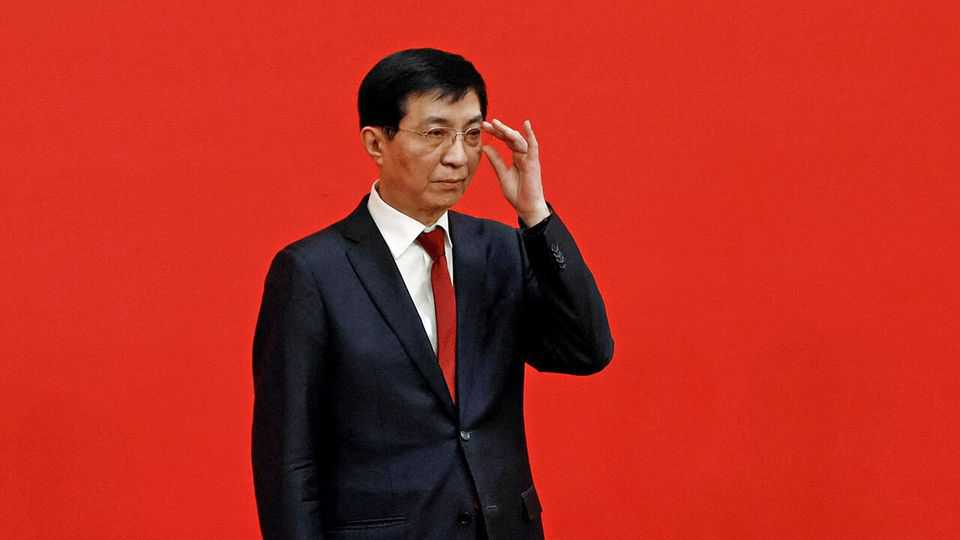

Xi Jinping’s chief ideologue is worried
Wang Huning describes threats to the Communist Party and country

Nov 12th 2026
China’s ruler, Xi Jinping, is a student of history. Not history as one damn thing after another, but capital-H History: the grandiose kind that is picked over by philosophers and stoned undergraduates. Mr Xi has said that history progresses according to certain Marxist “laws”, advancing in “stages” on the road to communism. He often refers to “great changes unseen in a century”, suggesting that mankind has reached a new historical watershed.
The great-changes idea is probably not Mr Xi’s. The far more likely inventor is Wang Huning (pictured above), who is the Communist Party’s fourth-ranked leader and unofficially its chief ideologue (he is probably the author of “Xi Jinping Thought”, which all cadres must study). Once a professor of political science, Mr Wang stands out among the grey men atop the party. He is the only one who has been a senior adviser to three leaders. Although his public-facing role is merely as head of a toothless advisory body, he is omnipresent on committees that draft big decisions.
So officials would have taken note on November 3rd when People’s Daily, a party mouthpiece, published a bracing warning by Mr Wang: rather than steering history, the party risks becoming its victim. Mr Wang elaborated on a new phrase that was launched by Mr Xi at a meeting of the party’s Central Committee in late October. It is the “three even more formidables” (no doubt Mr Wang’s invention, too). It refers to growing challenges that the party leadership thinks it faces in safeguarding national security, sustaining reform and stability, and maintaining ideological purity.
Mr Wang worries that a changing world may catch China off balance: he cites “all kinds of storms” and “challenges coming one after another”, from the artificial-intelligence revolution and protectionism to the erratic behaviour of certain countries (meaning, obviously, America).
Changes in China are a growing threat, too. Mr Wang describes a country racked by inequality between people, regions and industries. He points to demographic headwinds as China ages and its population shrinks. “Intelligentisation” (presumably meaning AI) could cause social disruption, he writes. New ways of working, meaning the gig economy that employs 320m people, have eroded the party’s control over labour. These days in China “all kinds of ideas and values intertwine and clash”, frets Mr Wang. He calls “contradictions” in society “unprecedented”.
Many of these concerns have been aired before, including by Mr Xi (a book of worry-related extracts from his speeches was published in 2020). But Mr Wang’s attempt to summarise the party’s problems in one essay is unusually blunt. It relates how money-making opportunities and foreign ideas have corrupted some officials and caused others to lose faith in Mr Xi. The job of disciplining them, Mr Wang notes, is becoming harder as the party expands (it now has 100m members). At the Central Committee meeting, a resolution expressed concern about leaders born in the liberalising post-Mao years. They place “new demands on education”, it said.
Creating a numbered term to sum up these concerns gives them new political weight. The aim, clearly, is to ensure that they are studied assiduously at every level of the party. Lest anyone dare to think that economic or political reform might solve some of these problems, Mr Wang argues for more control. That echoes the views of the Central Committee, which called for further concentration of decision-making power in the hands of senior leaders. It said technology firms should be overseen by higher-ranking officials, and listen more to their party cells. It also urged officials to use the internet to unite “the masses” and said they should guide gig workers to “listen to and follow” the party.
But will this work? Karl Marx, who also liked to muse on history, wrote that “changes in the economic foundation lead sooner or later to the transformation of the whole immense superstructure.” Mr Wang appears not to believe that anything so dramatic is inevitable in China. He urged his comrades to “keep our resolve and press ahead bravely”. That should do it. ■
Subscribers can sign up to Drum Tower, our weekly newsletter, to understand what the world makes of China—and what China makes of the world.